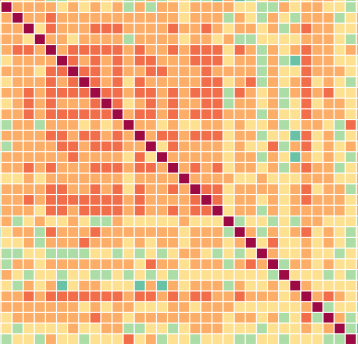

Spurious relationships
in Twitter data
Claudio Bruderer, Andrina Nicola, Anna Weigel
Nice tagline, ideas?
See our resultsNice tagline, ideas?
See our resultsWe have entered the era of Big Data and the wealth of information available to us entails its own new challenges. Relationships between quantities, whether real or without any obvious causal link, will naturally arise if the data sets are large enough (for examples see Tyler Vigen, Spurious correlations)). Even though we might be inclined to interpret apparent links between measurements, a correlation does not imply causation. One needs to find a way to distinguish spurious relationships between measurements from those with a causal link, and quantify the frequency of chance correlations occurring.
Based on a list of pre-defined keywords and Twitter data, we aim to show that relationships between quantities without any obvious causal link can be identified in large data sets. We use a Twitter dataset which contains unfiltered tweets between May 2014 - July 2014 and September 2014 - December 2014. For each day, we determine the number of tweets containing one of our pre-defined keywords. We then measure and quantify the time-correlation functions between the popularity of various keywords. To test our method we recover and quantify expected correlations between synonyms or related keywords. We additionally investigate and discuss the performance of different correlation measures.
The main results of the data reduction explained in the previous section, are time series of the occurence of each of the 100 keywords in the queried twitter dataset. In order to identify relationships between different keywords, we compare their occurence frequencies using three different methods based on the Pearson correlation coefficient and k means clustering.
Our list of keywords used in our analysis and how they are grouped by topic:
Terrorism / Religion: isis, terrorism, arab, spring, attack, god, christian, allah, islam
Refugees: syria, refugees, migrants, africa, italy, ethiopia, asylum, unhcr, immigration, foreigners
Ebola: ebola, guinea, sierra, leone, liberia, virus, epidemic, vaccine, who
Influenza: influenza, flu, birds, swine, pig
Science: bitcoin, rosetta, comet, higgs, climate, doomsday, maya, curiosity, sandy, hurricane
Discrimination: black, white, crowded, left, right
Malaysian Airlines: mh17, mh370
Ukraine/Crimea: ukraine, crimea, russia
Politics: snowden, nsa, obama, putin, mandela, nelson, pope, unemployment
Countries/Cities: europe, usa, philippines, sochi, olympics, geneva, boston, london
Technology: apple, linux, pc, google, iphone, galaxy, watch, facebook, twitter, whatsapp
Food/Trends: vegan, gluten, vegetarian, meat, pasta, banana
Family: family, divorce, marriage, wedding, holidays
Everyday life: homework, television, coffee, tea, school, work, teacher, sports, jogging, marathon
The main results of the data reduction explained in the previous section, are time series of the occurrence of each of the 100 keywords in the queried twitter dataset. In order to identify relationships between different keywords, we compare their occurrence frequencies using three different methods based on the Pearson correlation coefficient and k means clustering.
We can determine the amount of linear dependence between two time series $X_{i}$ and $X_{j}$ using the correlation coefficient $\rho$. The correlation $\rho(\Delta t)$ between two time series is a function of the time lag $\Delta t$ between the two and is defined as \cite{dettling14} \begin{equation} \rho_{ij}(\Delta t) = \langle (X_{i, t}-\bar{X}_{i}) (X_{j, t+\Delta t}-\bar{X}_{j}) \rangle, \label{eq:corrcoef} \end{equation} where $\langle ... \rangle$ denotes the ensemble average. For $\Delta t = 0$ we recover the usual correlation coefficient, whereas for $\Delta t \neq 0$, $\rho_{ij}(\Delta t)$ quantifies the amount of linear dependence between shifted time series. If the two time series are equal i.e. $i = j$, then we recover the autocorrelation function of the time series, which quantifies the amount of linear dependence in the time series itself. In order to compare the correlation between different time series, it is customary to normalise Eq.~\ref{eq:corrcoef} by the variance of the two time series i.e. \cite{dettling14} \begin{equation} \rho_{ij}(\Delta t) = \frac{\langle (X_{i, t}-\bar{X}_{i}) (X_{j, t+\Delta t}-\bar{X}_{j}) \rangle}{\sqrt{\langle (X_{i, t}-\bar{X}_{i}) (X_{i, t}-\bar{X}_{i}) \rangle \langle (X_{j, t}-\bar{X}_{j}) (X_{j, t}-\bar{X}_{j}) \rangle}}. \label{eq:corrcoef1} \end{equation}
When performing time series analyses we generally do not have access to the ensemble averages of the series, but we need to estimate the auto and cross correlations from the samples we have at hand. In order to be able to estimate the auto- or cross correlation using Eq.~\ref{eq:corrcoef}, the ensemble average needs to equal the sample mean i.e. the values of both time series at all times $t$ need to identically distributed random variables. This is equivalent to requiring both time series $X_{i}$, $X_{j}$ to be stationary, which means that their mean $\mu$, variance $\sigma^{2}$ and autocorrelation function $\rho_{ii}(\Delta t)$ do not depend explicitly on time $t$ \begin{align} \mu &= \langle X_{i, t} \rangle, \\ \sigma^{2} &= \langle (X_{i, t}-\bar{X})^{2} \rangle \\ \rho_{ii}(\Delta t) &= \frac{\langle (X_{i, t}-\bar{X}_{i}) (X_{i, t+\Delta t}-\bar{X}_{i}) \rangle}{\sqrt{\langle (X_{i, t}-\bar{X}_{i}) (X_{i, t}-\bar{X}_{i}) \rangle \langle (X_{i, t+\Delta t}-\bar{X}_{i}) (X_{i, t+\Delta t}-\bar{X}_{i}) \rangle}}. \end{align} Only in this case, can we replace the ensemble averages in Equations \ref{eq:corrcoef} and \ref{eq:corrcoef1} with the sample means. This leads to the following estimators for the auto and cross correlation functions \cite{dettling14}: \begin{align} \rho_{ii}(\Delta t) &= \frac{\sum_{t=1}^{n-\Delta t} (X_{i, t}-\bar{X}_{i}) (X_{i, t+\Delta t}-\bar{X}_{i})}{\sum_{t=1}^{n} (X_{i, t}-\bar{X}_{i})^{2}} \\ \rho_{ij}(\Delta t) &= \frac{\sum_{t=1}^{n-\Delta t} (X_{i, t}-\bar{X}_{i}) (X_{j, t+\Delta t}-\bar{X}_{j})}{\sqrt{\sum_{t=1}^{n} (X_{i, t}-\bar{X}_{i})^{2}\sum_{t=1}^{n} (X_{j, t}-\bar{X}_{j})^{2}}}. \end{align}
We do not expect the occurrences of keywords in twitter data to be stationary time series, since the mean occurrence of any keyword will for example depend on world events, its popularity and also on the number of people using twitter. We can roughly assess if any time series is stationary by visually inspecting the time series plot and also by computing its autocorrelation function $\rho(\Delta t)$. Non stationary time series are generally characterised by clear patterns in the autocorrelation functions because consecutive values are strongly correlated through the common trend.
In order to be able to quantify the correlation between non stationary time series we need to make the series stationary prior to evaluating Equations \ref{eq:corrcoef} and \ref{eq:corrcoef1}. The most basic form is called differencing, which allows us to transform time series with a slow trend to stationary series. A time series with a trend can be written as \cite{dettling14} \begin{equation} X_{i, t} = T_{i, t} + R_{i, t}, \end{equation} where $T_{i, t}$ denotes the time series' trend and $R_{i, t}$ are random fluctuations around this trend. These fluctuations $R_{i, t}$ are generally correlated random variables with mean zero. If the time series varies slowly, we can remove the trend by considering the differenced time series instead of the initial one. The differenced time series is defined as \cite{dettling14} \begin{equation} D_{i, t} = X_{i, t+1}- X_{i, t}. \end{equation} If $T_{i, t}$ is slowly varying, this transformed time series will only capture the random variations around the global trend and will thus approximately be stationary.
For non stationary time series, we can thus first perform differencing and then compute the auto and cross correlations between the differenced time series. This will encode the amount of linear dependence between changes in one time series from its global trend and changes in the second.
In order to quantify the significance of both the auto- and cross correlations, we need to compare the measured values to the expected values for uncorrelated time series. For uncorrelated time series, which are a sequence of IID variables we expect both for the auto and cross correlations $\rho(\Delta t) = 0$ with a variance of $\sigma^{2}(\rho(\Delta t)) = \frac{1}{n}$, where $n$ denotes the number of samples used to estimate the correlation \cite{dettling14}. For simplicity, we will call a cross-correlation between two time series significant if its value exceeds $1.96 \sigma(\rho(\Delta t))$ (i.e. the $95 \%$ confidence limits), even though we do not expect the differenced time series to be perfect IID processes.
The above considerations assume that there is no missing time series data, which is rarely the case in reality. Several pieces of data are missing in the twitter dataset. First of all we do not have access to data for most of August 2014 and furthermore there are several days missing thoughout. In order to be able to analyse the data, we therefore fill the missing values using random samples drawn from a normal distribution with the mean and variance of the respective time series. This procedure will keep mean and standard deviation constant and will not introduce any correlations between different time series.
In order to find relations between keywords, we will proceed in two steps: for illustration purposes we will compute the cross correlation between all the time series (filled as explained above) regardless of stationarity. We will then compute the autocorrelation function of all the series and recompute the correlation coefficient using the differenced time series for non stationary processes and compare theses two measures.
Odio turpis amet sed consequat eget posuere consequat.
Odio turpis amet sed consequat eget posuere consequat.